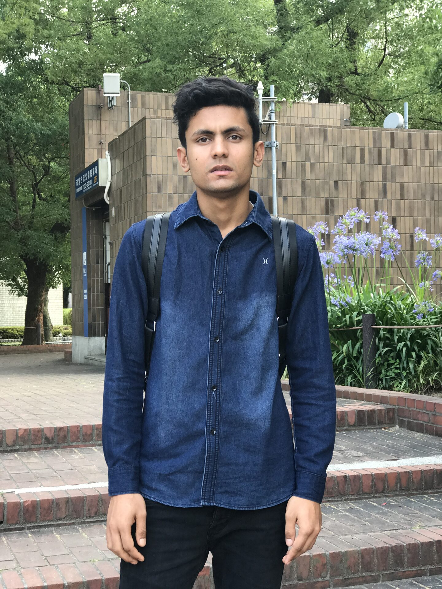

More Than Just Studying
Becoming an international student in Japan was one of the biggest turning points of my life. I had travelled thousands of kilometres away from Nepal to study in a country whose language, customs, and way of life were completely different from anything I had experienced before. Every day became an opportunity to learn—not only inside the classroom, but in every part of daily life.
My first challenge was the Japanese language. Although I had studied some basic Japanese before arriving, real conversations were much faster than anything I had practised. Ordering food, asking for directions, reading train signs, and communicating with teachers required patience and courage. Every new word I learned made daily life a little easier, and every conversation gradually built my confidence.
School introduced me to classmates from many different countries. We shared the same goal of building a better future while supporting each other through language barriers and cultural differences. Those friendships became one of the most valuable parts of my journey. Even though we came from different backgrounds, we understood the challenges of living far away from home.
Outside the classroom, Japan itself became another teacher. Travelling by train, respecting rules, arriving on time, separating rubbish correctly, and observing the discipline of everyday Japanese society taught me lessons that no textbook could provide. I realised that education is not limited to lectures and exams. It is also shaped by the environment where we live.
Looking back today, I believe that studying in Japan changed my mindset as much as it changed my knowledge. It taught me independence, responsibility, adaptability, and respect for different cultures. Those lessons continue to influence my life long after graduation.
"Education is not only what happens inside a classroom. Sometimes the country itself becomes your greatest teacher."
Lessons Beyond the Classroom
- Learning Japanese through everyday life.
- Building friendships with students from different countries.
- Understanding Japanese culture through daily experiences.
- Developing independence and self-confidence.
- Discovering that growth begins outside your comfort zone.